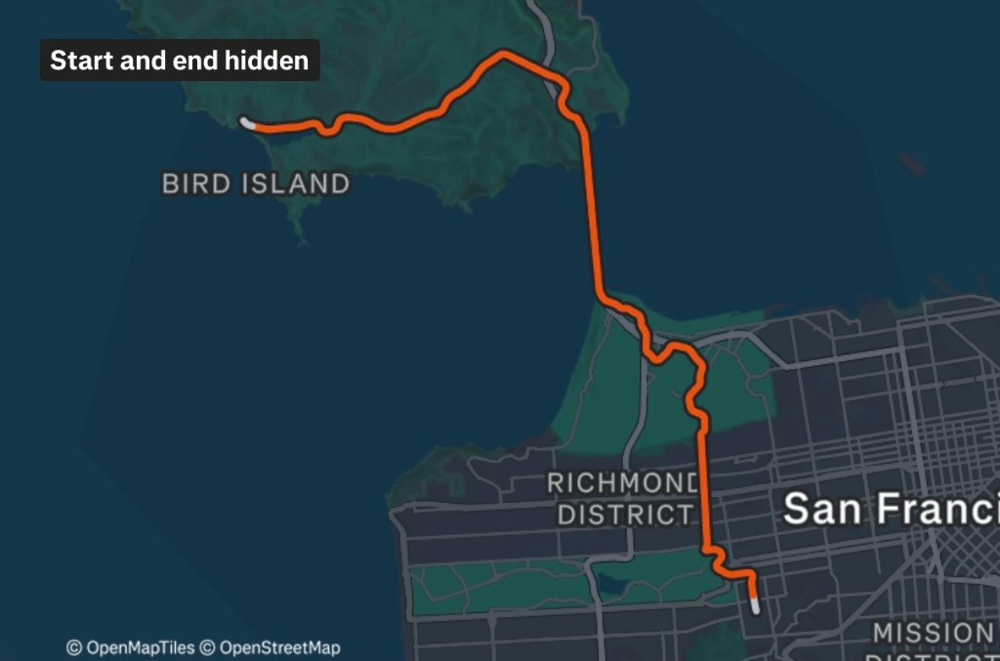
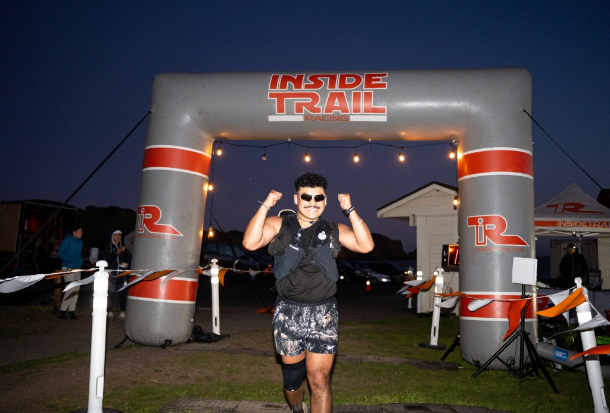

Thirteen days later.
That's how long it took me to break my promise.
On February 6th, I signed up for the Marin Ultra Challenge 50 miler on March 14th. Six weeks out, still walking with a limp. I can't fully explain it. Only the first one left something feeling empty — like a half-assed construction job.
There was a quieter, stupider voice underneath all the soreness that kept whispering: Who's gonna carry the boats? They don't know me son.
So I decided to try.
Focused. Driven. I sat down with Claude and built a real training plan. Four weeks, 60–70 miles a week, a proper deload at the end. Scientific. Structured. I also decided I wasn't taking the bus to the start line — I was going to bike there. An hour from the city, up through the hills into Marin, because apparently the correct way to prepare for a 50-miler is to show up having already done a workout.
I locked in.
Sort of...
I casually ran about 25-30 miles a week. More than the first time, sure, but not what the plan called for. The training plan became more of a suggestion I would nod at on my way out the door. It was going to come down to grit again — stubbornness and prayer, same as before.
But that was almost the point. If I could do this on half the training I was supposed to do, it meant something real. Not about fitness. About will. I kept banking on that. It was the only account I had money in.
I did get the shoes right. Salomon Ultra Glide 4s — broke them in a couple weeks out, loved them immediately. Incredible shoes. That part I nailed. The fueling: GU gels, GU waffles, Skratch, same caffeine tablets as before.
Race started at 6:30am. I woke up at 3:30, dressed, ate, stretched, and rolled out on the bike at 4:30 in the dark. Arrived at 6am. My legs already quietly registering a complaint.
“Did you bike here from the city?” asked a guy as I picked up my race bib. I nodded.

"Morning Ride" on Strava
I later found out that was the race director.
But same as the last, I ran this one alone. No crew, no pacer, no one handing me anything at the aid stations. By design. I wanted the whole thing to fall on me — no one to pull me through, no one to credit at the end. If I was going to find out what I was made of, I needed the answer to be mine.
The first few miles felt good. Controlled, even strong. Then mile 10 arrived and my legs sent up a quiet memo: we did a workout this morning. I filed it away and kept moving.
Somewhere around mile 20 I started talking to myself. Goggins: who's gonna carry the boats? They don't know me son!
Big energy. Great line. I grunted out loud for a handful of hours.
Around mile 30, I had no answer. I genuinely did not know who was going to carry the boats. And it was not looking like me.
But I kept moving. The course had an extra 2,000 feet of elevation, for roughly 12,000 feet all in. My tired legs felt every single foot of it.
13.5 hours total. I crossed the finish line, got my medal, got my t-shirt.
There it was. The feeling I'd been chasing since the first one — the feeling that sent me back out here forty-eight days later still. It arrived right then, quiet and certain. Not euphoria exactly. More like: oh. so this is what it feels like when it actually lands.
I found out later there's actually a name for it: gold medal syndrome. The phenomenon where athletes and high achievers cross the finish line of something they've spent months building toward and find, underneath all the relief, a strange creeping emptiness. Depression, anxiety, loss of purpose. And folded inside all of that, almost universally, is the doubt. The quiet suspicion that it doesn't really count. That you stumbled into it. That the next one will finally expose you for what you actually are.
I wasn't chasing a gold medal. I wasn't even close to the podium. But I understood it immediately — because what followed the feeling wasn't celebration. It was a quieter question I didn't expect: was any of it actually me?
I've thought about that a lot since. Two races. Undertrained both times. Underprepared both times. Carried to the finish line both times by something I still don't fully have a name for. Stubbornness, maybe. Definitely stupidity.
Whatever it was, it showed up. Both times, when there was nothing left and no one around and no good reason to keep moving, something did. And I'm not sure it matters what you call it. It got me across. Twice.
Maybe that's enough to build on.

Finish line · Marin Ultra Challenge
Next on my agenda is a 13-mile, half-marathon. This time, training according to plan.